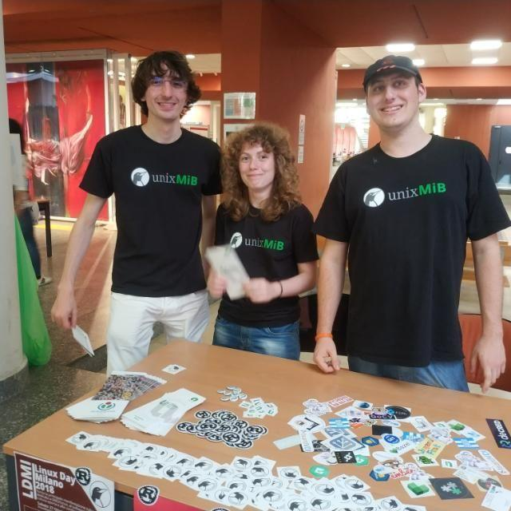

Grazie al mio percorso didattico ho appreso le basi dello sviluppo ad oggetti con Java e C++. Inoltre ho approfondito il paradigma logico con Swi-Prolog e quello funzionale con commonLisp. Per interessi personali studio da autodidatta Rust, Python e JS. Sempre grazie al mio percorso didattico ho acquisito delle basi di MySQL e gestione dei database, oltre ad un'infarinatura di teoria degli algoritmi, di teoria della computabilità, dello studio di reti e sistemi operativi, di sistemi distribuiti e di ingegneria del software. Collaboro strettamente con il Linux User Group della mia università, unixMiB. Collaboro poi con un'associazione no profit che si occupa di trashware, PcOfficina. Collaboro anche con la community di LinuxHub e GenteDiLinux. Nel breve futuro conto di approfondire la tematica della BioInformatica, argomento che mi ha molto incuriosito nell'ultimo periodo. La strada è ancora lunga... ma questo mondo è fantastico!
Sto frequentando il terzo anno della laurea triennale in Informatica. Uno dei fattori chiave di questo percorso è stato l'apprendimento di LaTeX per gli appunti .
Diploma di Liceo Classico • Luglio 2015
Ho affrontato il mio percorso delle superiori in uno dei migliori licei classici d'Italia. Nonostante la mia vita mi stia portando su una strada totalmente diversa a livello di contenuti l'approccio di mentalità del mio liceo mi è d'enorme aiuto.